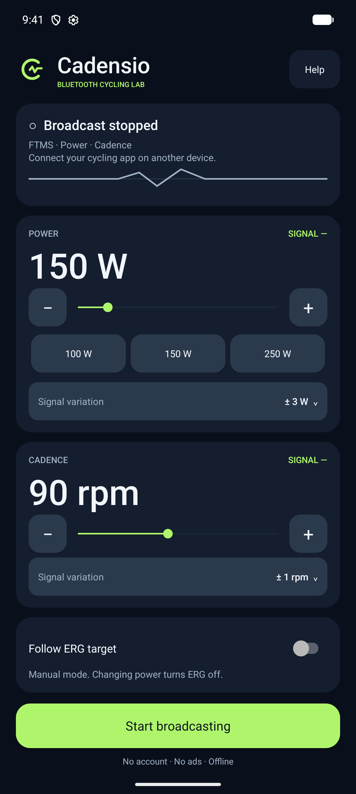
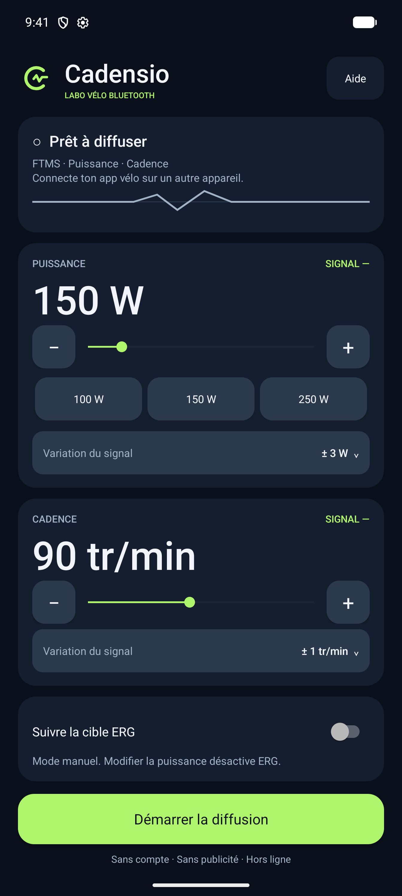

A signal you control
0–1,000 W. 0–200 rpm. Independent variation or a constant signal.
BLUETOOTH CYCLING LAB
Turn your Android phone into a simulated Bluetooth cycling sensor. Test power, cadence and FTMS connections without a smart trainer.
Submitted to Google Play on 16 November 2026. Awaiting checks and approval. Intended Google Play listing — available after approval and publication.
FREE · OFFLINE · NO ADS · OPEN SOURCE
0–1,000 W. 0–200 rpm. Independent variation or a constant signal.
Broadcast FTMS, Cycling Power and Cadence from a compatible Android phone.
Connect your cycling app on another device. Inspect connections and data subscriptions.
For developers, support teams and curious cyclists. Optional ERG mode follows incoming target-power commands; cadence stays manual. No account, no analytics SDK and no Internet permission.


Android 8+ and BLE peripheral advertising support are required. Some phones cannot advertise a connectable BLE sensor. A physical phone and a separate receiver are needed to verify compatibility.
No. Cadensio generates synthetic data. It does not measure physical effort or control a real trainer. Do not submit simulated values as real workouts, competition results or reward eligibility.
Cadensio implements standard FTMS, Cycling Power and Cycling Speed and Cadence services. Receiver support varies. Hardware interoperability and platform-specific compatibility are not yet certified.
Settings stay on your phone. Bluetooth carries simulated values to connected devices. The receiving app may store them under its own policy. Read the privacy policy.
Cadensio est un simulateur vélo Bluetooth gratuit pour Android. Réglez la puissance et la cadence, diffusez un capteur FTMS et testez votre application vélo sur un autre appareil. Sans compte, sans publicité, hors ligne. Il ne mesure pas votre effort réel.